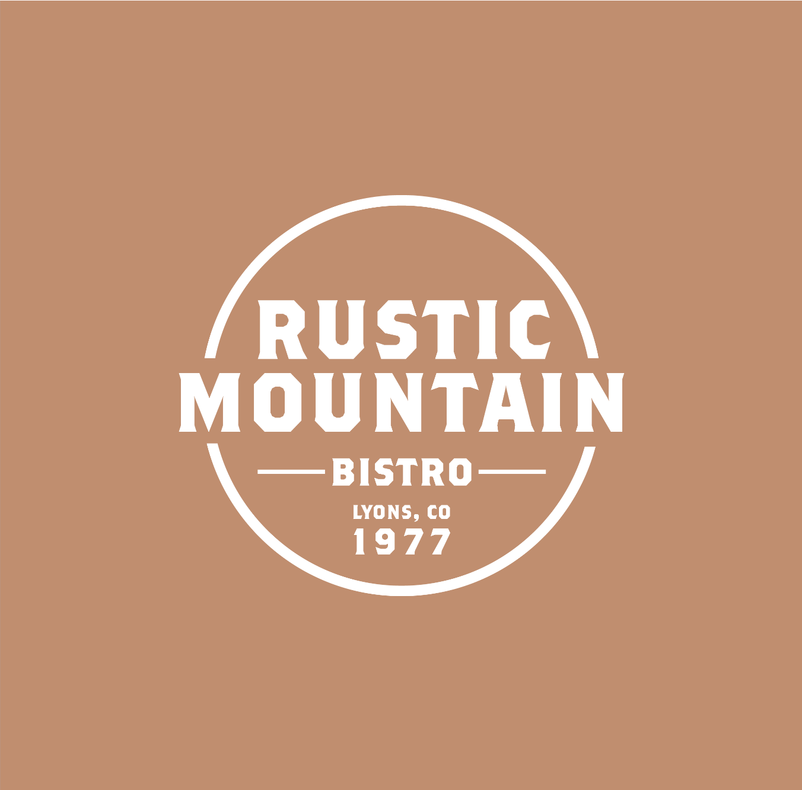
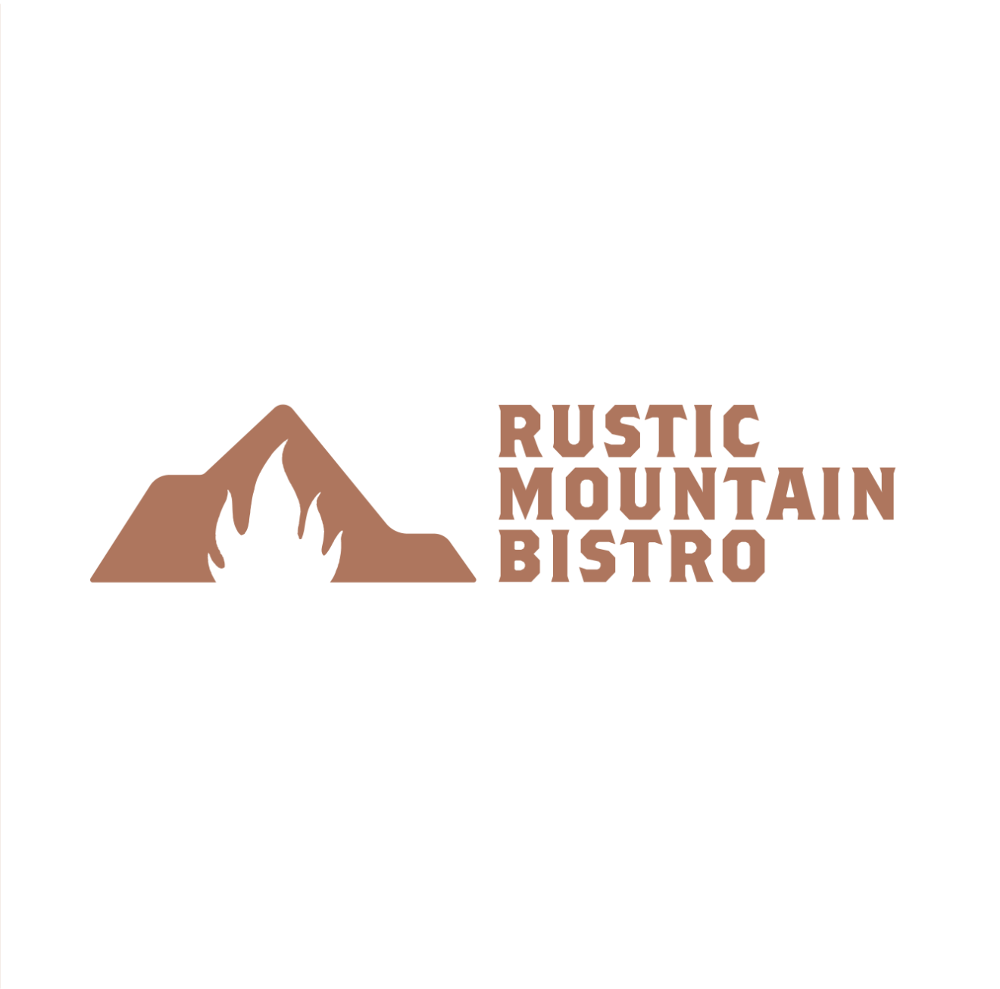
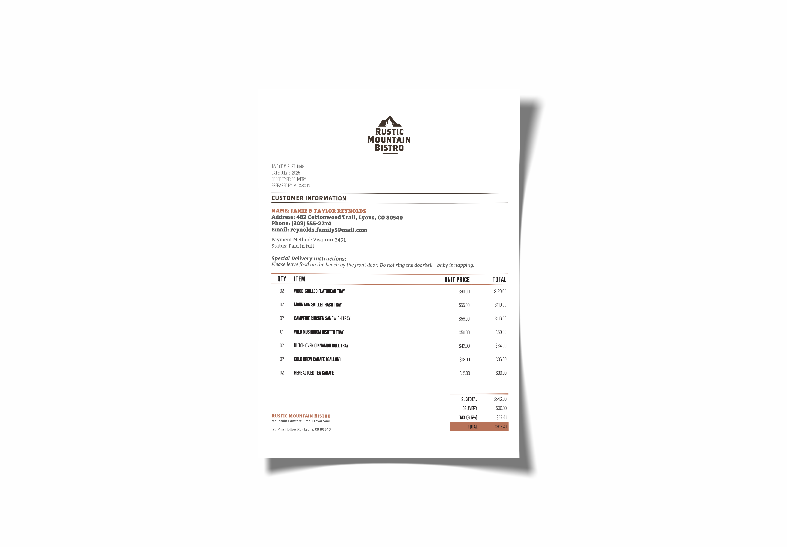
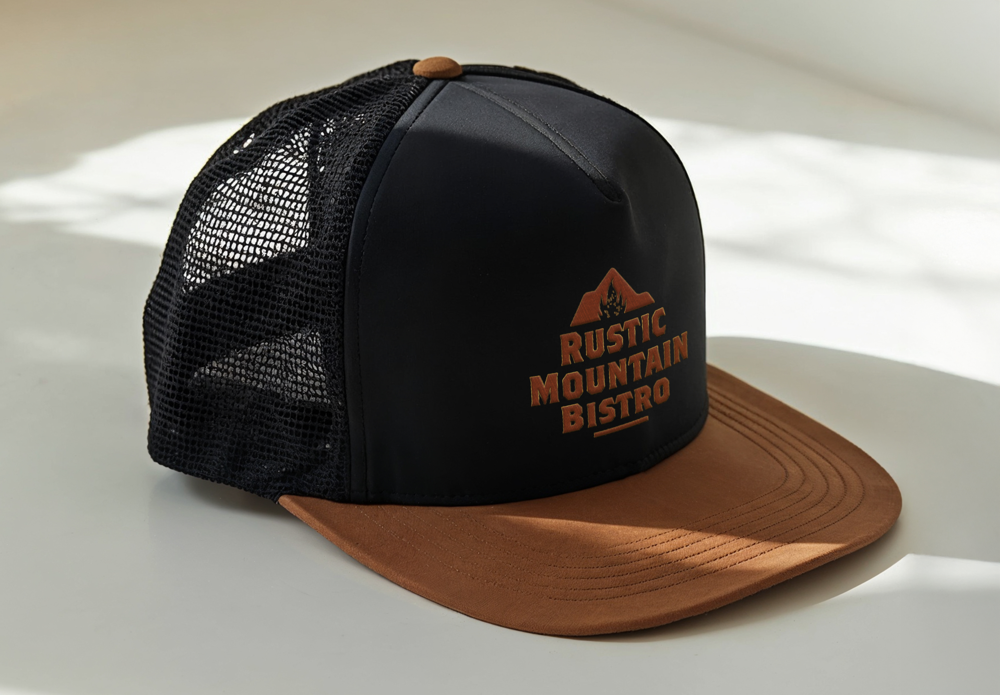
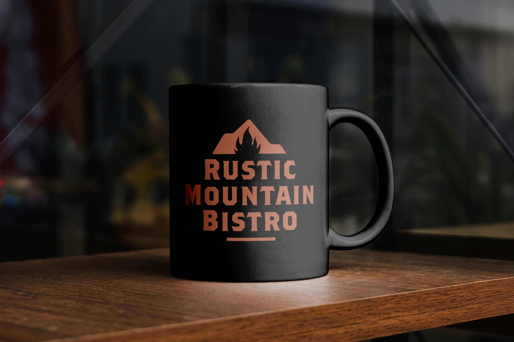
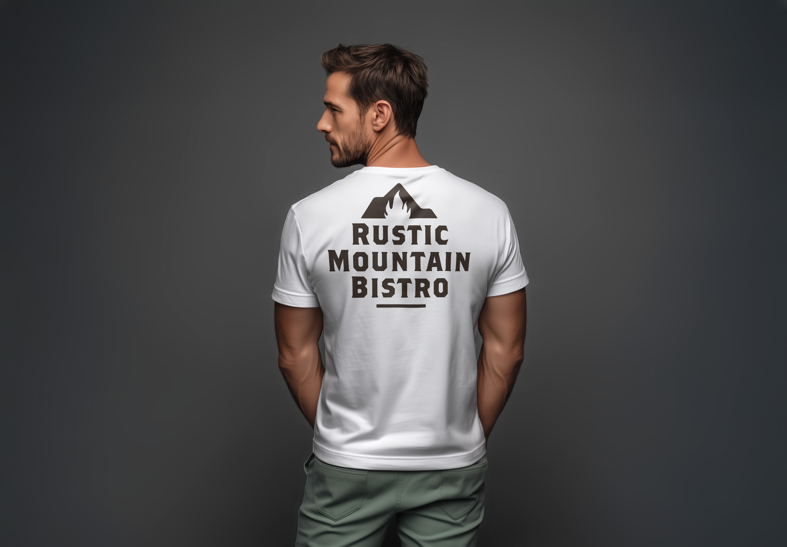

Nestled in the foothills of Lyons, Colorado, Rustic Mountain Bistro serves thoughtful, fire-cooked comfort food. The identity combines rugged mountain silhouettes with hearth flame negative space to reflect warmth, honest craft, and high-country charm.
The visual system spans physical and tactile touchpoints—from cast wood dining room signage and timber clipboards to customer tickets and durable outdoor merchandise.




Tactile Menu System
Engineered with clear typographic hierarchy and bold section dividers ("From the Fire", "Between Bread", "Bakery & Mornings"), printed on heavy natural kraft stock mounted to custom timber boards.

Guest Ticket & Billing
Even functional billing paperwork carries the brand voice through structured data tables, warm terracotta accents, and localized detail tags.




CMYK 24 55 69 7
CMYK 62 53 52 26
CMYK 2 2 4 0